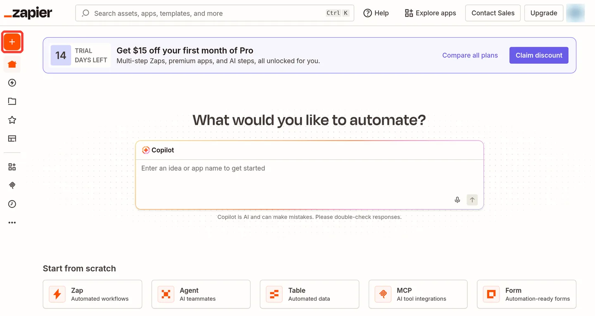
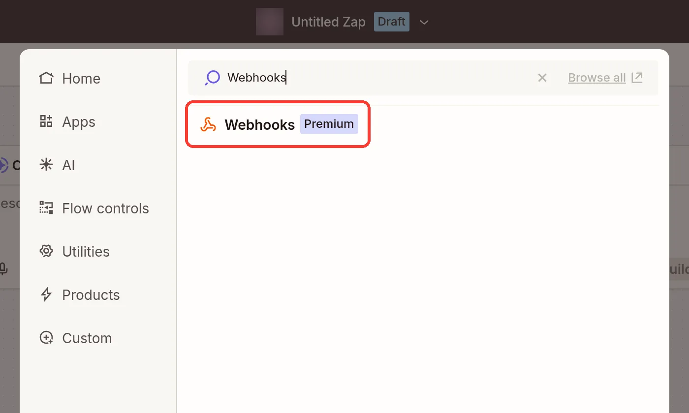
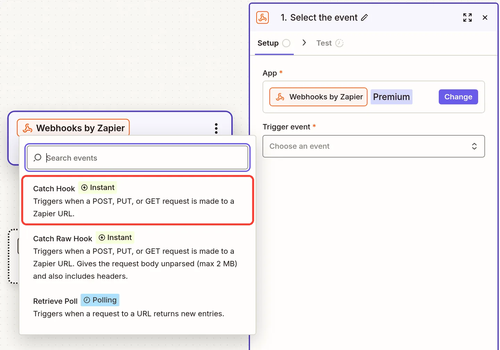
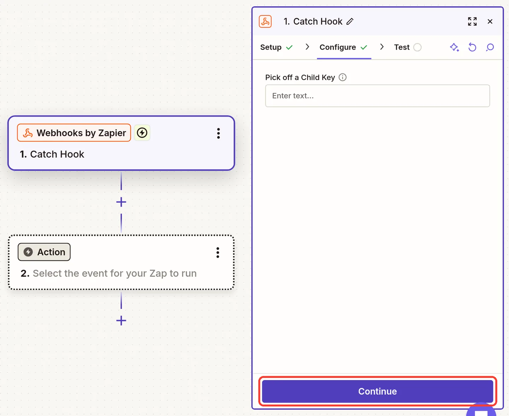
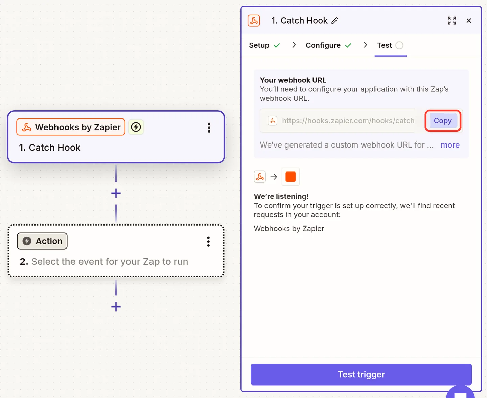
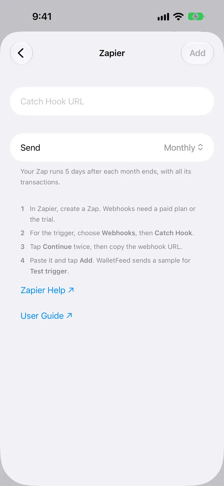
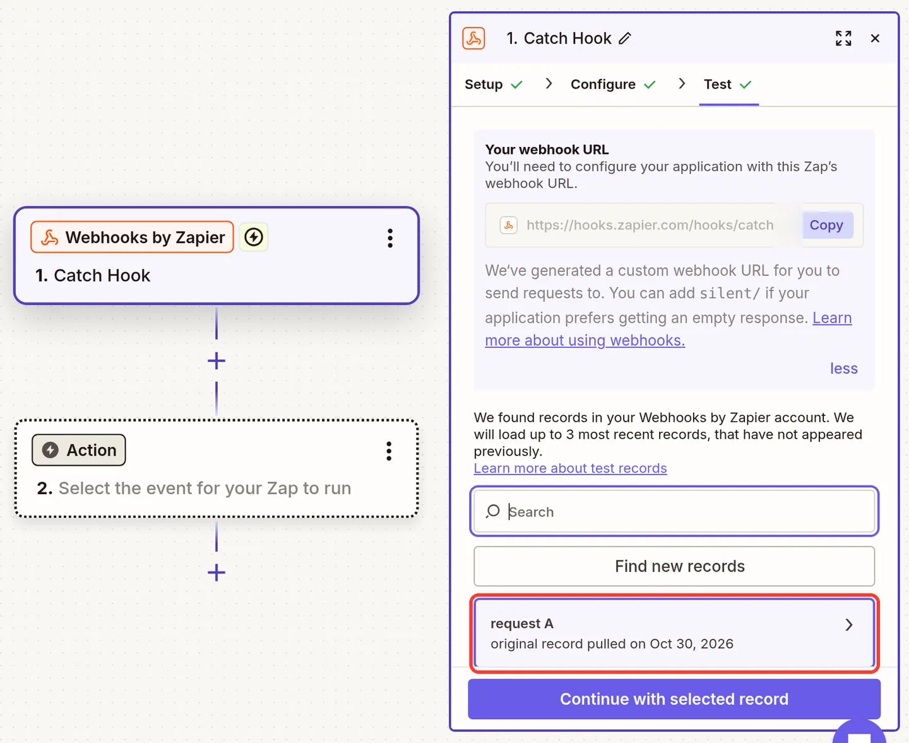
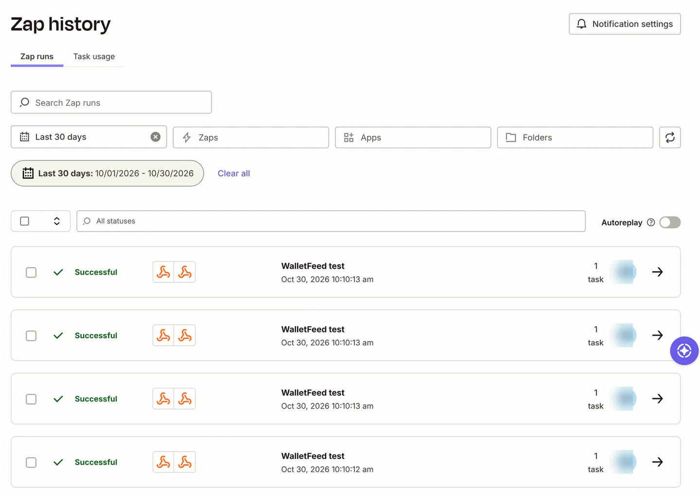
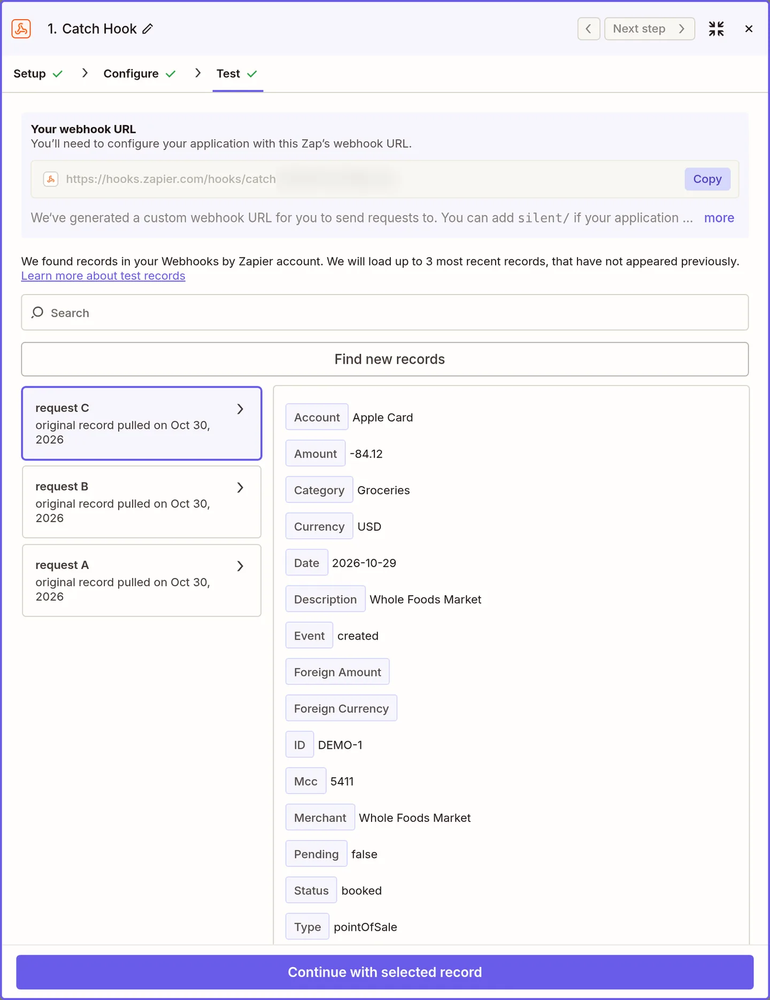
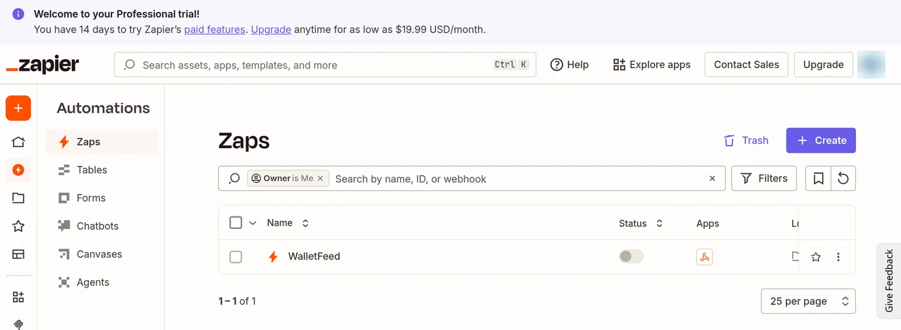

Send Apple Card transactions to Zapier
WalletFeed sends your Apple Card, Apple Cash and Savings transactions from your iPhone to Zapier. You make a Zap with a Catch Hook trigger in Zapier, then you paste the webhook URL of the trigger in WalletFeed.
Download WalletFeed on the App Store
Before you start
You must have these items:
- An iPhone with iOS 26 or a newer version. WalletFeed is available only in the US.
- WalletFeed on your iPhone. WalletFeed must have access to your Apple Card, Apple Cash or Savings account.
- WalletFeed Pro (a subscription with a 1-week free trial, or a one-time Lifetime purchase). WalletFeed Pro is necessary for all destinations.
- A Zapier account on a Professional, Team or Enterprise plan. These plans include Webhooks by Zapier. The Free plan of Zapier does not include it.
- A computer for the steps on the Zapier website.
Your URL stays on your iPhone
- WalletFeed keeps the webhook URL in the Keychain on your iPhone. iOS encrypts the Keychain.
- The webhook URL does not go to iCloud Keychain or to your other devices.
- WalletFeed has no account, and no WalletFeed server keeps the webhook URL. No person at WalletFeed can see or get the webhook URL.
- Your iPhone sends the webhook URL only to Zapier, in each request to Zapier.
- When you delete the destination, WalletFeed deletes the webhook URL from your iPhone.
Monthly or Each Transaction
In WalletFeed, a Zapier destination has two values for Send:
| Send | Zapier receives |
|---|---|
| Monthly | One event for each month, with all the transactions of that month. The Zap starts one time for each month. |
| Each Transaction | One event for each new transaction and for each change to a transaction. The Zap starts one time for each event. |
When you add a Zapier destination, Send is Monthly until you change it. A Zapier destination from WalletFeed 1.0 keeps Each Transaction. You can change Send after you add the destination (refer to Change Send).
With Monthly, WalletFeed sends each month 5 days after the month ends. It sends the month the first time that it sends data on or after the 6th day of the next month, in your time zone. Thus, most charges from the end of the month have posted.
Step 1: Make a Zap with a Catch Hook trigger
The Catch Hook trigger has a webhook URL. When WalletFeed sends data to this URL, the Zap starts.
-
On your computer, open Zapier.
-
If you have a Zapier account, get access to it.
-
If you do not have a Zapier account, make an account on Zapier's sign-up page.
-
Click + at the top of the left sidebar.

-
Click Zaps.
-
Click the Trigger box.
-
In the search box, type
Webhooks. -
Click Webhooks. Zapier then shows the app as Webhooks by Zapier.

-
Under Trigger event, click Choose an event.
-
Click Catch Hook. Do not click Catch Raw Hook.
With Catch Raw Hook, the Zap gets all the changes of one request in one run.

-
Click Continue.
Zapier can show a box about API by Zapier. WalletFeed does not use API by Zapier. You can close the box with ×.
-
On the Configure tab, make sure that the Pick off a Child Key field has no text. If this field has text, Zapier keeps only a part of each transaction.
-
Click Continue.

-
On the Test tab, under Your webhook URL, click Copy.

The field shows only the first part of the URL. But Copy copies all of the URL.
-
Keep this page open. You will use it again in Step 3.
Step 2: Add Zapier in WalletFeed
With Send set to Each Transaction, Zapier receives a maximum of 30 days of previous transactions. If you will use Each Transaction, you can set Initial History to Today before you add Zapier. Then Zapier receives no previous transactions. With Monthly, refer to Send previous transactions. To set Initial History, do these steps:
-
On your iPhone, open WalletFeed.
-
Tap Settings (the gear button) at the top of the screen.
-
In the Sync section, set Initial History to Today.
Settings shows the Sync section only with WalletFeed Pro.
-
Tap Done.
To add Zapier, do these steps:
-
On your iPhone, open WalletFeed.
-
Tap Destinations.
-
Tap + at the top of the screen.

-
Under Automations, tap Zapier. You can also type
Zapierin the search field. -
If WalletFeed shows the WalletFeed Pro screen, get WalletFeed Pro on that screen. WalletFeed then opens the Zapier screen.
-
Paste the URL in Catch Hook URL.

Because a person with the URL can start your Zap, WalletFeed keeps the URL in the Keychain on your iPhone.
-
In Send, select Monthly or Each Transaction.
With Monthly, WalletFeed shows “Your Zap runs 5 days after each month ends, with all its transactions.” With Each Transaction, WalletFeed shows “Each transaction runs your Zap. Add a filter later to send fewer.”
-
Tap Add. WalletFeed sends a sample to Zapier.
With Monthly, the sample is a month with one sample transaction. With Each Transaction, the sample is one transaction.
-
Read the message Send Transactions to Zapier?
The message tells you the data that Zapier receives. It also tells you the accounts and the start date of the data. With Monthly, the message starts with “Zapier receives one event 5 days after each month ends”.
-
Tap Send.
If you tap Cancel, WalletFeed does not add the destination.
Destinations then shows the new Zapier destination.
Step 3: Find the sample in Zapier
-
On your computer, in the Zap editor, click Test trigger.
-
Click request A.

Zapier shows the fields of the sample. With Each Transaction, Merchant is WalletFeed, and Amount is -4.2. With Monthly,
eventismonth,countis 1, andtransactionscontains the sample transaction. -
Click Continue with selected record. Zapier then shows the apps for the Action step.
Step 4: Add the Action step in Zapier
The Action step uses the data in an app. For example, the step can add a row to a Google Sheets spreadsheet.
- Select the app that receives the data, for example Google Sheets.
- Do the steps that Zapier shows for this app.
- If the action must have a value from the transaction, use the fields from Step 3, for example Merchant and Amount.
- Click Publish at the top right of the editor.
- In Automations › Zaps, make sure that the Status of your Zap is on.
With Monthly, Zapier shows the transactions of the month as line items. To use each transaction, select an action that accepts line items, for example Create Multiple Spreadsheet Rows in Google Sheets. You can also use Looping by Zapier. Each action in a loop uses tasks.
Each time that the Zap does an action step, it uses one task in Zapier. The trigger uses no task. With Monthly, the Zap starts one time for each month. With Each Transaction, the Zap starts one time for each new transaction and for each change to a transaction.
Zap history in Zapier shows each time that the Zap started, and the tasks that it used.

Data that Zapier receives
Your transactions go from your iPhone directly to Zapier. WalletFeed has no account, and no WalletFeed server keeps your transactions or keys. After Zapier receives your transactions, the terms of Zapier are applicable to them.
With Monthly, the event of a month has these fields:
| Field | Value |
|---|---|
event |
month |
month |
The month in your time zone, for example 2026-10 |
count |
The number of transactions in transactions |
total |
The sum of the amounts. Purchases are negative. If the month has more than one currency, total has no value. |
currency |
The currency code of total, for example USD. If the month has more than one currency, currency has no value. |
transactions |
The transactions of the month, newest first. Each transaction has the fields in the subsequent table, but no Event. |
If the filter of the destination includes no transactions of a month, Zapier receives no event for that month.
With Each Transaction, WalletFeed sends a maximum of 100 changes in one request. Zapier starts the Zap one time for each change. In the Zap, the data of each change has these fields:
| Field in Zapier | Value from Wallet |
|---|---|
| Event | created for a new transaction and for each transaction from Initial History or Send History, updated for each subsequent change, and deleted when Wallet removes the transaction |
| ID | The transaction ID from Wallet. It stays the same when the transaction changes. |
| Date | The date of the purchase in your time zone, for example 2026-10-29 |
| Merchant | The merchant name, or the description if Wallet has no merchant name |
| Amount | Negative for a purchase, for example -84.12, and positive for a refund or a payment, for example 49 |
| Currency | The currency code, for example USD |
| Category | The WalletFeed category, for example Groceries |
| Status | The Wallet status: pending, authorized, memo or booked |
| Pending | true while the status is pending, authorized or memo, and false after the status changes to booked |
| Account | The Wallet account, for example Apple Card |
| Description | The description from Wallet |
| Type | The type of transaction, for example pointOfSale or refund |
| Mcc | The merchant category code, for example 5411 |
| Foreign Amount and Foreign Currency | The amount and the currency code of a purchase in a different currency |
| Posted Date | The day the charge posted, for example 2026-10-30. It has no value while the charge is pending. |
| Statement Text | The text of the transaction on the card statement |
| Exchange Rate | The exchange rate from Wallet, for a purchase in a different currency |
| querystring | A field that Zapier adds. It always has no value. |

For a deleted transaction, the data has only Event and ID. If Wallet does not give a value for a field, the field has no value in Zapier. An example is Foreign Amount or Exchange Rate for a purchase in dollars. In Zapier, an amount has no zeros at the end, for example 49 for $49.00.
A Zap that you made before WalletFeed 1.2 keeps working. To use Posted Date, Statement Text and Exchange Rate in the steps after the trigger, do these steps:
- On your iPhone, tap Send Test.
- On your computer, in the Zap editor, click Test trigger in the trigger.
- Select the newest request.
The sample of Send Test has no value for Posted Date and Exchange Rate. A request for a real purchase in a different currency has values.
New and changed transactions
With Each Transaction, while WalletFeed is open, Zapier receives changes in seconds. When WalletFeed is not open, iOS starts WalletFeed approximately 1 hour or less after a change in Wallet. If Background Sync is on in Settings › Sync, WalletFeed then sends the change.
Background Sync is on until you set it to off.
With Monthly, Zapier receives each month one time, 5 days after the month ends. A charge that is pending at that time has pending true, and Zapier does not receive it again when it posts. Zapier also does not receive a change to a month after it received the month, for example a refund with a date in that month. If WalletFeed stops while it sends a month, Zapier can receive the same month two times. A Zap can use month to find a month that it received before.
With Each Transaction, one transaction can start the Zap more than one time:
- Zapier receives a new purchase with Event
createdand Statuspending. - When the Status changes to
booked, Zapier receives the same ID again with Eventupdated. - If the bank does not accept a pending charge, or Wallet removes a transaction, Zapier receives Event
deletedand the ID.
A refund is a different transaction. It has a positive Amount and the Type refund.
With Each Transaction, if WalletFeed stops while it sends changes, it sends the same changes again at a subsequent time. Zapier starts the Zap again for each change that it received before. Thus, a Zap that adds a row for each change can add a transaction two times. A Zap that first finds the row by ID, and then updates it, keeps one row for each transaction. This Zap uses two tasks for each change.
Zapier can start the Zap for some changes at the same time. Thus, the Zap does not always get the changes in the sequence that WalletFeed sends them.
Send previous transactions
A new Zapier destination also receives previous transactions from the start date in Settings › Sync › Initial History. Initial History is All until you change it.
With Monthly, a new destination receives all the months from the start date. WalletFeed starts at the first day of the month of the start date. Each previous month is one event, and WalletFeed waits 2 seconds between two months. WalletFeed sends the month in which you add the destination, and each subsequent month, 5 days after the month ends. If you add the destination in the first 5 days of a month, WalletFeed also sends the previous month in this way.
With Each Transaction, Zapier receives a maximum of 30 days of previous transactions.
To send transactions from a longer period, use Send History:
-
In Destinations, tap the Zapier destination.
-
Tap Send History.
-
Select a period (30 Days, 90 Days, 1 Year or All).
With Monthly, the period starts on the first day of its month.
-
In the message Send History to Zapier?, tap Send.
With Monthly, the message shows "Each month runs your Zap once." With Each Transaction, the message shows "Each transaction runs your Zap."
WalletFeed sends the newest transactions first. With Monthly, each month starts the Zap one time. Send History does not send again the months that WalletFeed sent 5 days after they ended. With Each Transaction, each transaction starts the Zap one time. Each action step uses one task in Zapier.
With Each Transaction, Send History sends each transaction with Event created. Thus, Zapier can receive the same transaction two times as created.
To stop Send History, do these steps:
- Tap Send History.
- Tap Stop Sending.
Change or remove the destination
Change Send
-
In Destinations, tap the Zapier destination.
-
In Send, select Monthly or Each Transaction.
-
Optional: If you selected Each Transaction and the destination has no filter, tap Turn On Filter below Send.
-
Tap Send Test.
Result: WalletFeed sends a sample with the data of the new Send value.
-
On your computer, open the Zap in Zapier.
-
In the Catch Hook trigger, on the Test tab, click Find new records.
-
Select the new sample.
-
In the Action step, select the fields again.
After you change Send to Monthly, Zapier receives the month in which you change Send 5 days after it ends. This month has all its transactions, also the transactions that Zapier received before. After you change Send to Each Transaction, Zapier receives the changes from that time. To send previous transactions, use Send History.
Send only some transactions
- In Destinations, tap the Zapier destination.
- Set Filter to on.
- Change Include, Minimum, Include Pending, Accounts, Categories or Exclude.
For more information, refer to Choose what a destination receives.
To stop the destination for a time, set Enabled to off.
Replace the URL
If you make a new Zap, give its URL to WalletFeed:
- In Zapier, copy the webhook URL of the new Zap (refer to Step 1).
- In WalletFeed, open the Zapier destination.
- Tap Replace URL.
- Paste the new URL in Catch Hook URL.
- Tap Replace. WalletFeed sends a sample to the new URL before it keeps the URL.
The destination screen shows Webhook with hooks.zapier.com. It does not show all of the URL.
Delete the destination
- In WalletFeed, open the Zapier destination.
- Tap Delete.
- In the message, tap Delete again.
The transactions that WalletFeed sent stay in Zapier. They also stay in the apps that received them from your Zap.
When the Zap is off or deleted, it does not start for your transactions. But Zapier can accept requests at the URL for some hours, and WalletFeed shows no error.
To delete the Zap, do these steps:
- Open the Zap in Zapier.
- Click the Zap name at the top of the editor.
- Click Delete.
- If Zapier shows a message, click the button that deletes the Zap.
If there is a problem
If you cannot tap Add
The text in Catch Hook URL is not a full Zapier webhook URL. The URL must start with https://hooks.zapier.com/hooks/catch/, and then have the ID of your account and the ID of the hook. If you copy the text in the Zapier field, you get only the first part of the URL.
- In Zapier, open the Test tab of the Catch Hook trigger.
- Click Copy.
- In WalletFeed, delete the text in Catch Hook URL.
- Paste the URL again.
If WalletFeed shows "The webhook refused the test"
Zapier did not accept the sample, because the URL is not correct or Zapier stopped the URL.
- In Zapier, open Automations › Zaps.
- If your Zap is not in the list, make a new Zap (refer to Step 1). Then do step 6.
- Click your Zap in the list.
- Click the Catch Hook trigger.
- On the Test tab, click Copy.
- In WalletFeed, delete the text in Catch Hook URL.
- Paste the URL in Catch Hook URL.
- Tap Add.
If WalletFeed shows "Zapier refused the test (HTTP 404). Turn on the Zap, or copy the URL again."
Zapier did not accept the sample, because the Zap is off or deleted, and Zapier stopped the URL.
- In Zapier, open Automations › Zaps.
- If your Zap is in the list, set its Status to on.
- If your Zap is not in the list, make a new Zap and copy its URL (refer to Step 1).
- In WalletFeed, paste the URL in Catch Hook URL again.
- Tap Add or Replace again.
If the destination shows "Rejected (HTTP 404)"
Zapier did not accept the transactions, because the Zap is off or deleted. After the Zap is off, Zapier can wait some hours before it stops the URL.
- In Zapier, open Automations › Zaps.
- If your Zap is in the list, set its Status to on.
- If your Zap is not in the list, make a new Zap (refer to Step 1).
- If you made a new Zap, give its URL to WalletFeed (refer to Replace the URL).
If Zapier finds no request
You clicked Test trigger before WalletFeed sent the sample.
- In WalletFeed, open the Zapier destination.
- Tap Send Test. WalletFeed sends the sample again.
- In Zapier, click Find new records.
Zapier loads a maximum of 3 records at a time, and it does not always load the newest records. This limit is only for the test. When the Zap is on, it starts for each event.
If the Zap does not do its action
The Zap is a draft, or it is off. Zapier accepts the requests for the Zap, but the Zap does not do its action. WalletFeed shows no error.
-
In Zapier, open the Zap.
-
Click Publish.
-
In Automations › Zaps, set the Status of the Zap to on.

If the Zap stops after the Zapier trial
After the 14-day trial, the Zapier account is on the Free plan. The Free plan does not include Webhooks by Zapier.
- In Zapier, click Upgrade at the top of the page.
- Select a plan that includes Webhooks by Zapier, for example Professional.
If one transaction makes two rows
The Zap starts for each change to a transaction. WalletFeed can also send the same change two times.
- In the Zap, before the step that adds a row, add a step that finds the row by ID.
- If the step finds a row, update that row.
If Zapier receives transactions only while WalletFeed is open
Background Sync is off.
- In WalletFeed, open Settings › Sync.
- Set Background Sync to on.
 Scan with your iPhone
Scan with your iPhone
Related
Updated November 16, 2026